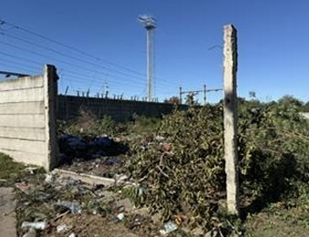
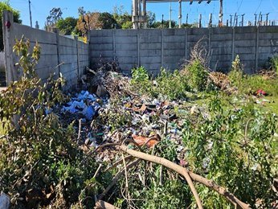
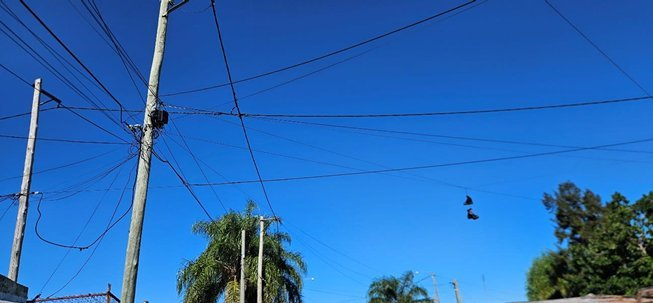
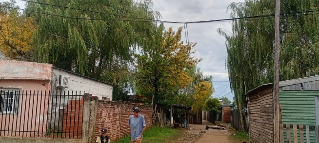
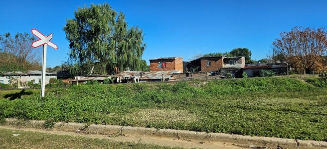

Introducción
El barrio Villa Busti / General Lamadrid se ubica en el sector Este de la ciudad. Lo delimitan las calles Echagüe, Maipú, Moreno y el Boulevard San Lorenzo. Surgió en la década de 1990 como resultado de adjudicaciones del IAPV (Instituto Autárquico Provincial de Vivienda), consolidándose con el tiempo como barrio residencial.
A diferencia de los asentamientos informales relevados, este barrio posee trazado urbano definido y en su mayoría viviendas de material noble. Sin embargo, presenta importantes déficits en infraestructura interna, especialmente en los pasillos interiores, donde persisten conexiones eléctricas irregulares y dificultades en el acceso a servicios básicos.
Servicios públicos y comunicación
| Servicio | Estado | Detalle |
|---|---|---|
| Cloacas | Disponible | La mayoría de las viviendas está conectada a la red cloacal |
| Agua corriente | Parcial | Disponible en la mayoría. Dificultades de acceso en pasillos internos |
| Alumbrado público | Parcial | Presente en calles principales; deficiente en pasillos interiores |
| Calles | Sin pavimentar | Calles de tierra en mal estado; pasillos internos sin mejoras |
| Transporte público | Disponible | Línea 4 circula por Bv. San Lorenzo |
| Recolección residuos | Deficiente | Basurales en pasillos internos y terrenos linderos; falta de contenedores |
| Telefonía celular | Disponible | Buena cobertura en todo el barrio |
| Internet | Parcial | Megacable e Internet Cooperativa con cobertura parcial |
Servicio Eléctrico
Las conexiones clandestinas en los pasillos generan riesgo eléctrico constante para los vecinos. Los cables van a escasa altura y sin la protección adecuada. A pesar de haberse acercado en varias oportunidades a la Cooperativa Eléctrica, los vecinos de los pasillos no han podido regularizar su situación por falta de infraestructura en esas áreas internas.
El ingreso promedio declarado es de $772.353, lo que representa ingresos bajos aunque ligeramente superiores a los de otros asentamientos relevados.
Establecimientos educativos y de salud
Educación primaria: Escuela N°6 José de San Martín, colectora con jardín de infantes incluido.
Educación primaria y secundaria: Escuela Gerardo Yoya, con nivel primario y secundario, incluyendo educación de adultos.
Salud: Los vecinos acuden al SAP San Agustín y al SAP Nebel como centros de atención más cercanos. No existe establecimiento de salud dentro del barrio.
Información de las familias
Se trata de un barrio con mayor consolidación que los asentamientos informales relevados. La mayoría de las viviendas son de material noble, adjudicadas originalmente por el IAPV en los años 90. Sin embargo, la densificación posterior generó pasillos internos con viviendas precarias sin acceso adecuado a servicios.
Composición familiar: Promedio de 4,8 personas por hogar, ligeramente superior al promedio de los demás barrios.
Edad promedio: 32,6 años, lo que indica una población algo más adulta comparada con los asentamientos más nuevos.
Ingresos: Promedio declarado de $772.353. Predominan changas, trabajos informales y la Asignación Universal por Hijo como ingreso fijo en muchos hogares.
Material de construcción: Aproximadamente el 90% de las viviendas son de material noble. El 10% restante corresponde a construcciones precarias en los pasillos interiores.
Nivel educativo: Medio-bajo, con predominio de educación primaria completa o incompleta entre los jefes de hogar.
Conclusión
Villa Busti / General Lamadrid es el barrio con mayor nivel de consolidación entre los relevados, con viviendas mayoritariamente de material noble y acceso a servicios básicos en las calles principales. Sin embargo, los pasillos interiores presentan condiciones similares a las de los asentamientos informales: conexiones eléctricas irregulares, falta de pavimento, dificultades con el agua y acumulación de residuos. La regularización del servicio eléctrico en esas zonas internas representa la principal demanda de los vecinos y la intervención más urgente para la Cooperativa Eléctrica.
Registro fotográfico — Villa Busti




